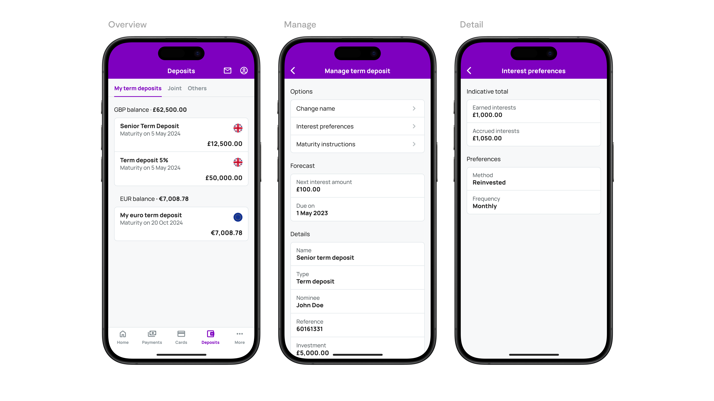

Fixed term deposits are a cornerstone of personal banking, offering customers a secure way to earn interest on their savings. However, managing these investments can often be complex and opaque. Our goal was to simplify this process, making it more intuitive, engaging, and informative.
My Role and Contributions
As the lead product designer, I was responsible for overseeing the entire design process, from initial research through to the final user testing and iteration stages. My contributions included conducting user interviews, developing wireframes and prototypes, and implementing user feedback to refine the product.
Challenges
- Streamlining Onboarding: Simplifying the process for new users to create a fixed term deposit account.
- Demystifying Financial Information: Making complex data such as interest rates and maturity dates easily understandable.
- Enhancing Communication: Creating effective notifications for crucial events, ensuring users are always informed.

Design Process
- Research: Utilised market analysis and user interviews to identify key needs and challenges.
- Ideation: Led brainstorming sessions that produced innovative solutions to improve user experience.
- Prototyping: Developed and iterated on prototypes to visualise our solutions effectively.
- User Testing: Conducted extensive user testing to gather feedback and refine our approach.
- Iteration: Implemented changes based on user feedback to enhance the product's usability and engagement.
Results and Insights
Introduction of a dynamic progress bar led to a 42% increase in user engagement. Also, user feedback highlighted a significant improvement in the ease of managing fixed term deposits.
Visuals and Prototypes
Detailed mockups and prototypes are available upon request, showcasing the design's evolution from initial concepts to the final product. These visuals highlight our user-centric approach and the iterative process that led to our successful redesign.
Conclusion
By placing the user at the heart of the design process, we were able to break down complex financial information into digestible, actionable insights, empowering users to make informed decisions about their investments. The success of this project underscores the importance of empathy in design, continuous iteration based on user feedback, and the potential for technology to transform traditional banking experiences into something more intuitive, engaging, and user-friendly.